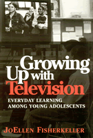

A powerful interdisciplinary book on how young adults watch—and learn from—television
A powerful interdisciplinary book on how young adults watch—and learn from—television


 A powerful interdisciplinary book on how young adults watch—and learn from—television
A powerful interdisciplinary book on how young adults watch—and learn from—television

|  |
Growing Up with TelevisionEveryday Learning Among Young AdolescentsJoEllen Fisherkellerpaper EAN: 978-1-56639-953-1 (ISBN: 1-56639-953-X) |
Outstanding Academic Title, Choice, 2002
"TV is for when you don't have anything to do, or when you're lonely, or something. It's for you to learn, things and stuff...say you don't have anything to do, you can always turn it on for light or whatever...I'm alone, I don't like to leave the TV off. Unless I'm getting ready to go to sleep or something. I turn out all the lights...And then I leave it on, I go to my room and watch videos. I just like it."
—TeniyaSerita, age 12
Why talk with young people about TV? This is the question from which JoEllen Fisherkeller begins her insightful examination into the uses and power of TV in youth cultures.
Fisherkeller studies the experiences of adolescents watching TV and talking about TV at home, at school, and with their peers. They discuss their hopes for the future as well as the challenges they currently face, and reveal how television plays a role in their everyday life. These young individuals, who come from a wide range of backgrounds, literally grow up with television, as the author follows them from middle school to high school and then on to college.
As the most significant cultural symbol in the US, television is a powerful educational and socializing force. Fisherkeller examines how youth are attracted to TV programs and persona that help them work through personal and social dilemmas. TV stories teach them about conflicts of gender, race and class that parallel the lessons they learn from real life and the system of television show them how image creation is a real means of "making it" in an image-conscious society.
Growing Up with Television is a groundbreaking book that should speak to a multitude of disciplines on the educative and societal power of a medium that pervades and defines contemporary experience.
Excerpt available at www.temple.edu/tempress
"Growing Up with Television is an engaging and highly informative account of the meaning that young people give to television and the power it carries in their everyday lives. With clarity and a careful attention to detail, Fisherkeller documents the richness that her informants find in television and situates their viewing practices amidst family, school, and peer culture. What is perhaps most extraordinary about this book is Fisherkeller's ability in gaining the trust of her informants and affording them the opportunity to speak for themselves about television; and they do, revealing to her not only what, how, and why they watch, but more importantly, what they are drawn to identify with and compelled to be critical of when it comes to the characters and personalities, the settings, situations, and stories—and the myths, even—that we know of as television. Growing Up with Television challenges us to re-examine commonplace and sometimes superficial notions that this culture generates about television, young people, and the experience they have coming of age in a media-saturated society."
—Ron Lembo,
Associate Professor of Sociology, Amherst College
"JoEllen Fisherkeller approaches television—unusually—not as a negative force in the lives of young people, nor even as a vast, hegemonic capitalist institution dedicated to profit, [but] from an anthropological, rather than a political or a behavioural perspective—and this means suspending the value judgments."
—Anthropology and Education Quarterly
Acknowledgments
Introduction
1. Coming to Terms with TV Culture and Everyday Learning
2. Marina—Composing Images of Popularity and Sexual Power
3. Christopher—Settling into Images of Belonging and Righteous Power
4. Samantha—Pondering Images of Political and Vocal Power
5. The Dynamics of Everyday Learning
6. The Dilemmas of Growing up with Multiple Media and Cultures
Epilogue: Marina, Christopher and Samantha, Continued
Appendix: Methodological Notes
 | JoEllen Fisherkeller is Associate Professor in the Department of Culture and Communication at New York University. |
Mass Media and Communications
Education
Sociology
© 2015 Temple University. All Rights Reserved. This page: http://www.temple.edu/tempress/titles/1598_reg.html.